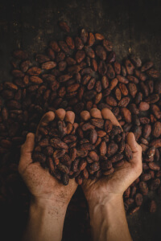

巧克力的大小事
我們的故事
關於EAC
時光倒流至1920年，那是一個充滿懷舊風情的年代，一位名叫愛德華的巧克力愛好者，開始了他為巧克力著迷的人生。
愛德華年輕時曾到過歐洲旅遊，深深被當地的巧克力文化所吸引，他的心中種下了創立一個巧克力品牌的夢想。
回到家鄉後，他決定著手創建自己的品牌，傳遞他對於巧克力的熱愛。
經過多年的精心打磨和不斷創新，愛德華的品牌成功登上了舞台。
愛德華對於巧克力的追求和熱情，使他的品牌贏得了眾人的認可。
EAC至此掀起了一股風潮。
從那時起，愛德華的品牌就成為了人們心中最愛的巧克力品牌之一。
即使經過了這麼多年，愛德華的品牌依然保留著他對於巧克力的熱情和堅持，成為了無數巧克力愛好者的最愛。
現在，當你品嚐著愛德華的巧克力時，你可以想像著這位鍾愛巧克力的創辦人所追求的熱情，
以及他為實現夢想所付出的努力。
目錄年表
愛德華自歐洲返台，開創屬於自己的巧克力品牌
1920年
愛德華前往拉丁美洲，建立可可豆農場
1955年
E A C 第一款特殊內餡巧克力研發成功
1977年
愛德華前往東南亞，擴大可可豆供應鏈
2000年
EAC獲選為財星500強公司
2018年
E A C 首款牛奶巧克力研製成功 !
1935年
經典產品-巧克力布朗尼正式上架
1968年
E A C 牛奶巧克力正式改款
1989年
經典產品-布朗尼銷量正式突破百萬份!
2007年
EAC成為世界最大巧克力品牌
2023年
未完待續
更多故事